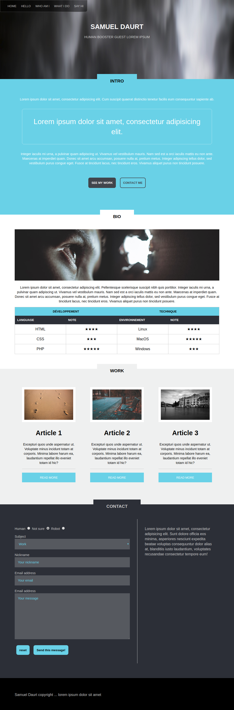

Portfolio : intégration et dynamisation
Les consignes sont assez sommaires :
- Faire cette intégration, basée sur une seule capture écran (ouvrez l'image sous VScode pour la voir à 100%).
- La plupart des connaissances vues en saison HTML/CSS vous seront utiles.
- Commencez par la structure HTML/PHP, puis les règles CSS.
- Importez le fichier data.php dans votre page, et utilisez les variables qui y sont déclarées pour remplir dynamiquement l'intérieur du tableau de compétences (partie Bio) et la liste d'articles (partie Work)
- Ne traitez pas forcément tout d'un coup, dégrossissez les éléments principaux, puis faites des allers-retours entre HTML et CSS si besoin pour peaufiner les détails.
- Pensez à utiliser les images libres de droit utilisées dans le challenge "Page perso" (ou dummyimage).
Bon courage 💪 !
